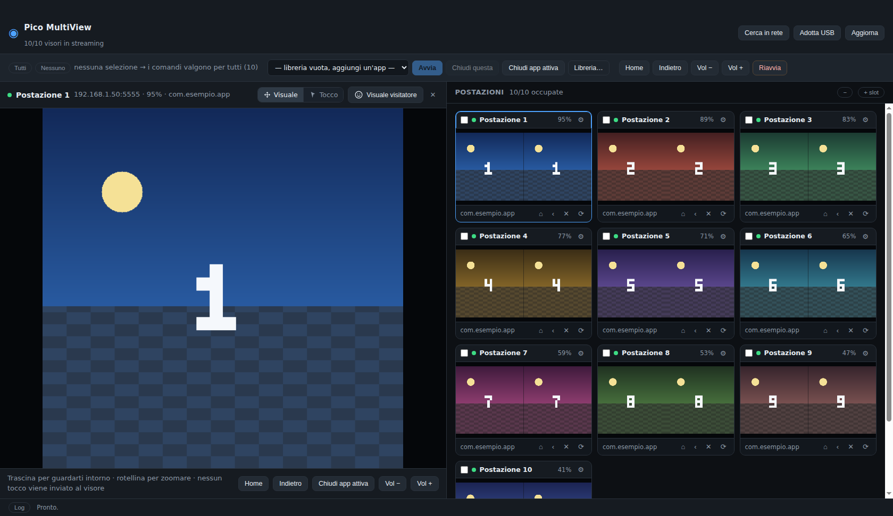
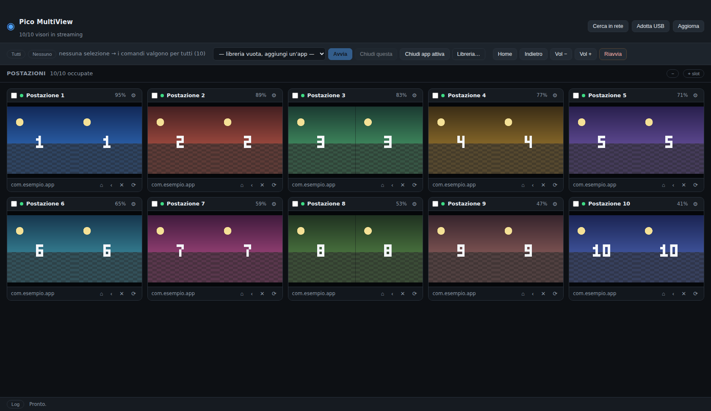
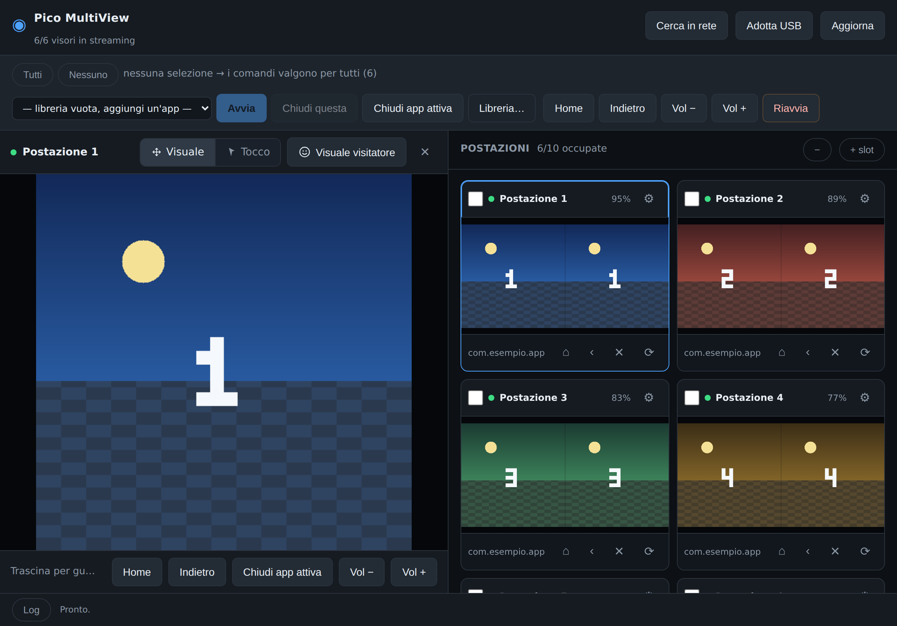

Guida passo passo per chi parte da zero
Come installare il programma sul Mac, preparare dieci visori PICO 4 e governarli durante un evento. Nessuna conoscenza tecnica richiesta: si parte da come si apre il Terminale.

Ogni parte comincia su una pagina nuova. Se è la prima volta, falle in ordine: dalla 1 alla 3 si fa una volta sola, la 4 e le successive sono quelle che userai a ogni evento.
Serve solo per l'installazione. Una volta finito, il programma si apre come qualsiasi altra applicazione e il Terminale non lo tocchi più.
Il Terminale è una finestra dove si scrivono comandi invece di cliccare pulsanti. Fa le stesse cose del Finder — copiare file, installare programmi — solo che glielo si chiede a parole. Non è pericoloso: fa esattamente quello che gli scrivi, niente di più.
Il tasto ⌘ è quello con il quadrifoglio, a sinistra della barra spaziatrice. Si apre una barra di ricerca al centro dello schermo.
terminale e premi InvioNon serve scriverlo tutto: bastano le prime lettere e il Mac lo trova da solo.
Quella riga con il % finale si chiama prompt: vuol dire "sono
pronto, dimmi cosa fare". Il testo prima del % cambia da Mac a Mac, non
preoccuparti se il tuo è diverso.
%, poi passa
alla successiva.
error e fermano tutto.
Copia e incolla i comandi, non riscriverli a mano: un trattino o uno spazio sbagliato
basta a farli fallire. Se il Terminale risponde
command not found, quasi sempre è un errore di battitura.
Si fa una volta sola. Circa quindici minuti, quasi tutti di attesa mentre il Mac scarica.
È il motore su cui gira il programma. Apri Safari e vai su
nodejs.org: c'è un pulsante grande con scritto LTS
(vuol dire "versione stabile"). Scaricalo, apri il file .pkg che finisce in
Download e clicca Continua fino alla fine, accettando
quello che propone.
Apri il Terminale (Parte 1) e incolla:
Se risponde con un numero preceduto da v, è installato. Se dice
command not found, chiudi il Terminale, riaprilo e riprova: dopo
l'installazione va riaperto.
Incolla questi comandi uno alla volta, aspettando ogni volta che ricompaia il prompt:
In parole povere, riga per riga:
cd ~/Documents — spostati nella cartella Documenti.git clone … — scarica il programma da internet.cd pico-multiview — entra nella cartella appena scaricata.npm install — installa tutti i pezzi che servono (è il più lungo, anche qualche minuto).npm run deps:adb — scarica lo strumento che parla con i visori.git compare una finestra
Il Mac potrebbe proporti di installare gli "strumenti da riga di comando per
sviluppatori". Accetta, aspetta che finisca (qualche minuto) e poi ridai il comando
git clone. Succede solo la prima volta.
Si apre la finestra di Pico MultiView con dieci postazioni vuote. Il Terminale deve restare aperto mentre usi il programma: è lui che lo tiene acceso. Per chiudere tutto, chiudi la finestra del programma.
Dentro la cartella del programma c'è un file che fa tutto da solo: Avvia Pico MultiView.command. Ci fai doppio clic e il programma parte — niente Terminale da aprire, niente comandi da ricordare.
Per trovarlo, incolla questo comando: si apre la cartella nel Finder.
Comodo tenerlo a portata di mano: trascina il file sulla Scrivania tenendo premuti ⌥ + ⌘ (così crei un collegamento e non sposti l'originale), oppure fai tasto destro → Crea alias e sposta l'alias dove preferisci.
La più semplice: doppio clic su Avvia Pico MultiView.command (o sul collegamento che hai messo sulla Scrivania). Si apre una finestra nera che scrive qualche riga e poi compare il programma: quella finestra va lasciata aperta, è lei che lo tiene acceso.
Se preferisci il Terminale: le due righe di sempre.
Il file controlla che ci sia tutto e, se manca qualcosa, se lo scarica da solo: la prima volta può metterci qualche minuto. Se qualcosa non va te lo dice in italiano e lascia la finestra aperta per farti leggere il messaggio.
C'è una modalità dimostrativa che riempie le dieci postazioni con visori finti e un'immagine finta. Serve a prendere confidenza con i comandi senza rischiare niente:
Se non vuoi più vedere il Terminale, questo comando crea una vera applicazione Mac. Dentro
la cartella dist troverai Pico MultiView.dmg: aprilo e trascina
l'icona in Applicazioni. Da lì parte con un doppio clic.
Si fa una volta sola per visore, circa un minuto ciascuno. Serve il cavo USB-C, ma solo adesso: dopo si lavora tutto via wifi.
Mac e visori devono stare sulla stessa rete. Se il router ha l'opzione isolamento client (in inglese AP isolation), va disattivata: altrimenti i dispositivi non si vedono fra loro anche se sono sulla stessa wifi.
Indossa il visore e vai in:
Impostazioni → Generale → Informazioni sul dispositivo
Tocca sette o otto volte di seguito su Numero build finché non compare un messaggio che dice che la modalità sviluppatore è attiva. Poi torna in Impostazioni → Sviluppatore e accendi Debug USB.
I nomi delle voci cambiano un po' fra le versioni di PICO OS, ma la sostanza è questa: cercare "Numero build" e toccarlo tante volte.
Attacca il visore al Mac con il cavo USB-C. Dentro il visore compare la domanda "Consenti debug USB da questo computer?".
Metti la spunta su Consenti sempre da questo computer prima di confermare. Se non la metti, dovrai riautorizzare ogni volta e niente funzionerà da solo.
Nel programma, clicca una postazione vuota e poi Adotta quello collegato via USB. Il Mac legge l'indirizzo del visore, gli dice di mettersi in ascolto sulla rete e si ricollega senza cavo. Il visore compare nella postazione: ora puoi staccare il cavo.
Clicca l'ingranaggio ⚙︎ sulla miniatura e scrivi un nome: "Postazione 1", "Visore rosso", quello che ti torna comodo. Il nome resta salvato.
Attacca un'etichetta fisica con lo stesso nome sul visore. Quando qualcuno alza la mano, sapere quale riquadro guardare vale più di qualsiasi funzione del programma.
Passi 3, 4 e 5 per ciascuno. Alla fine avrai dieci postazioni piene e il cavo lo puoi mettere via.
Il collegamento via wifi si perde quando il visore si riavvia: bisognerebbe
rifare il giro col cavo. Su molti visori si può rendere permanente con questo comando, da
dare con il visore ancora collegato (sostituisci <numero> con quello che
compare scrivendo adb devices):
Se dopo un riavvio il visore non si ricollega lo stesso, vuol dire che quel modello non conserva l'impostazione: ricollega il cavo e ripremi Adotta USB.
Da qui in poi non serve più il Terminale: si clicca e basta.

Ogni postazione resta associata al suo visore anche dopo aver chiuso il programma: la disposizione della sala non si perde. Con + slot ne aggiungi altre se un giorno i visori diventano di più.
Clicca la miniatura di un visore: lo schermo si divide. A sinistra quel visore, grande e a più risoluzione; a destra le miniature di tutti gli altri, sempre vive. Non perdi mai di vista la sala mentre segui una persona.
Nell'anteprima, tieni premuto il tasto sinistro del mouse e muovilo: ti sposti dentro l'immagine del visore. La rotellina ingrandisce. In questa modalità non viene inviato nessun tocco al visore, quindi puoi guardare in giro mentre la persona sta usando l'applicazione, senza disturbarla.
Quando ti sei spostato compare in basso la scritta Visuale spostata e il pulsante Visuale visitatore si accende. Cliccalo (o premi 0) per tornare esattamente a quello che sta guardando chi indossa il visore.
Il programma riceve solo quello che il visore disegna, cioè il campo visivo di chi lo indossa. La visuale libera si muove dentro quell'immagine — e siccome la cattura è "a due occhi affiancati", di norma c'è più spazio di quanto sembri — ma non puoi girarti a guardare dietro le spalle del visitatore: quei pixel semplicemente non esistono.
Il segmento Tocco nella barra dell'anteprima trasforma il mouse in un dito: clic e trascinamenti diventano tocchi veri sullo schermo del visore, il tasto destro fa "indietro". Serve per sbloccare qualcuno: rimetterlo nell'app giusta, chiudere un avviso, tornare alla home.
Si riparte sempre da Visuale quando cambi visore, apposta: durante un evento non vuoi cliccare per sbaglio dentro il visore di un visitatore.
Sui pannelli 2D — la home di PICO, i menu di sistema, il browser, le app non immersive — il puntatore funziona molto bene. Dentro le esperienze immersive invece l'app ascolta i controller, non il touchscreen: il clic può non produrre nulla. Lì restano validi i comandi di sistema (Home, Indietro, Chiudi app attiva, avvio app, volume) e, in modalità Tocco, i tasti freccia e Invio.
La barra in alto agisce su tutte le postazioni se non hai selezionato niente, oppure solo su quelle con la casella spuntata.
| Voglio… | Come |
|---|---|
| lanciare l'esperienza su tutti | nessuna selezione → scegli l'app dal menù a tendina → Avvia |
| lanciarla solo su alcuni | spunta le caselle delle postazioni → Avvia |
| far uscire uno dall'app | il tasto ✕ sulla sua miniatura |
| rimettere tutti alla home | Home senza selezione |
| alzare o abbassare il volume | Vol + / Vol − |
| controllare le batterie | la percentuale su ogni miniatura; diventa rossa sotto il 20% |
Clicca Libreria… e poi Rileva app installate: il programma elenca le applicazioni presenti sui visori, con una spunta accanto a quelle installate su tutti. Clicca quella del tuo evento, dalle un nome leggibile e salva. Da quel momento la lanci ovunque con un clic.
Comodo quando devi girare per la sala invece di stare davanti al portatile.

L'iPad non parla direttamente ai visori, ma non serve: il Mac fa già tutto il lavoro e può servire la stessa identica schermata sulla wifi.
Clicca Telecomando… nella barra in alto, poi Accendi. Compaiono un indirizzo e un PIN di sei caratteri.
Apri Safari e scrivi l'indirizzo così come lo vedi sul Mac, per esempio
http://192.168.1.10:8788/?k=K7M2Q4. Ha già il PIN dentro, quindi entri
diretto.
Per averlo come un'app: Condividi → Aggiungi a Home. Parte a tutto schermo, senza le barre di Safari.
Un dito trascina la visuale. Due dita pizzicano per ingrandire. Il pulsante con la faccia riporta sulla visuale del visitatore. In modalità Tocco il tuo dito diventa il dito del visitatore sullo schermo del visore.
Dieci minuti prima che arrivi il pubblico, in ordine.
Il pannello Log in basso racconta cosa è successo, visore per visore. È la prima cosa da guardare quando qualcosa non torna: spesso la risposta è già scritta lì.
I problemi tipici, in ordine di quanto capitano spesso.
| Cosa vedi | Perché succede | Cosa fare |
|---|---|---|
| Un visore non compare quando cerco in rete | È su un'altra wifi, è addormentato, o il router isola i dispositivi | Sveglialo indossandolo un attimo, controlla la rete, disattiva l'isolamento client sul router |
Nel log leggo unauthorized |
Manca la spunta "Consenti sempre da questo computer" | Ricollega quel visore col cavo e autorizza mettendo la spunta |
| Si collegava, adesso no | Il visore è stato riavviato e ha perso l'ascolto sulla rete | Cavo + Adotta USB, oppure imposta persist.adb.tcp.port (Parte 3) |
| Un riquadro resta nero o fermo | Lo streaming di quel visore si è interrotto | Premi ⟳ sulla miniatura. Se ricapita, passa quel visore alla modalità screencap dall'ingranaggio |
| Tutto va a scatti con dieci visori | La wifi non regge dieci flussi video | Usa una rete dedicata; in alternativa abbassa la qualità delle miniature |
Il Terminale dice command not found |
Comando scritto a mano con un errore, o Node non installato | Copia e incolla il comando; controlla node -v (Parte 2) |
| L'iPad non apre la pagina | Telecomando spento sul Mac, o iPad su un'altra rete | Telecomando… → Accendi; stessa wifi |
| Clicco nell'anteprima e non succede niente | Sei in modalità Visuale, oppure l'app è immersiva | Passa a Tocco; se è immersiva usa i comandi di sistema |
Se apri il programma da un altro Mac sulla stessa rete, i visori sono già raggiungibili
(quella parte sta nel visore, non nel computer), ma il nuovo Mac non è ancora autorizzato:
ha una sua "chiave" che i visori non conoscono. La via veloce è copiare la chiave dal
computer già autorizzato — sono due file nella cartella ~/.android/ chiamati
adbkey e adbkey.pub. Copiali nella stessa posizione sul computer
nuovo e i visori lo riconosceranno subito, tutti insieme.
Per portarti dietro anche postazioni, nomi e libreria app, copia il file di configurazione:
~/Library/Application Support/pico-multiview/config.json.
Da leggere solo quando ne incontri una e ti chiedi cosa voglia dire.
| Parola | Che cosa vuol dire qui |
|---|---|
| Terminale | La finestra del Mac dove si scrivono comandi invece di cliccare. Serve solo per installare il programma. |
| Comando | Una riga di testo che dici al Mac di eseguire, seguita da Invio. |
| Node.js | Il motore su cui gira il programma. Si installa una volta e poi ci si dimentica. |
| adb |
Lo strumento che permette al Mac di parlare con i visori (sono computer Android sotto
sotto). Lo scarica il comando npm run deps:adb.
|
| Indirizzo IP |
Il "numero civico" di un dispositivo sulla rete, tipo 192.168.1.51. Ogni
visore ne ha uno.
|
| Isolamento client (AP isolation) |
Un'impostazione del router che impedisce ai dispositivi sulla stessa wifi di vedersi fra loro. Va spenta, altrimenti il Mac non trova i visori. |
| Modalità sviluppatore | Un interruttore nascosto nelle impostazioni del visore che permette a un computer di comandarlo. Si attiva toccando sette volte "Numero build". |
| Package |
Il nome tecnico di un'app, tipo com.tuostudio.museo. Il programma lo trova
da solo con Rileva app installate.
|
| Streaming | Il video in diretta che arriva dal visore al Mac. |
| PIN del telecomando | I sei caratteri che proteggono l'accesso dall'iPad. Chi li ha può comandare i visori: trattali come una password. |
Nella cartella del programma ci sono due documenti più tecnici, aggiornati insieme al
codice: README.md (come è fatto e cosa sa fare) e
docs/SETUP-PICO.md (la preparazione dei visori nei dettagli, compresi i casi
particolari). Si aprono con qualsiasi editor di testo, o direttamente su GitHub.